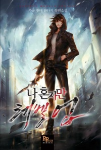

Немного о себе
Привет! Хочу поделиться частичкой своей жизни с тобой, дорогой читатель. Здесь ты можешь найти интересные ранобэ или мангу, узнать немного обо мне. Если что-то замотивирует или заинтересует тебя, я буду счастлива.
Ранобэ
Ранобэ - это почти то же самое, что и обычные произведения, но в отличие от последних в них история зачастую разбита на большее количество глав и длится дольше. Книги разочаровывали меня своими концовками, поэтому я решила начать читать ранобэ. Но вот концовки ранобэ все такие же плохие, как и в книгах. Поэтому я приняла одно из важнейших решений в моей жизни! Я престала дочитывать книги до конца. Ведь, если не знаешь концовку, она тебя не разочарует, верно?
Читаю сейчас: Я действительно не сын пророка
Лучшее из прочитанного:
- Бог преступности

Я читала много ранобэ про Системы, перерождения и возвращение во времени, но эта особенно интересна. Сложно придумать интересную Систему, но автору это удалось. Книга с самого начала цепляет за душу. У автора интересная манера повествования и идеи. В общем и целом, книга о парне который был приговорен к смерти. После приговора он возвращается во времени к своим школьным годам. Он получает что-то вроде системы и начинает бороться с преступностью. "Преступность" в этой книги очень занятная. К сожалению, конец слит, не советую досчитывать последнюю арку. Но если не смотреть на конец, это действительно одно из достойнейших произведений.
- Поднятие уровня в одиночку
Эта книга, можно сказать, является классикой жанров Системы, Охотники, пробужденные. Мир в котором есть Подземелья с монстрами и Охотники. ГГ слабый охотник, но после одного случая он получает Систему и начинает становиться сильнее. Сила у ГГ некромантская, может поднимать существ, которых он победил. Он, получив Систему, начинает качаться, развиваться, становиться сильнее. Помогает своей стране. Неярко выраженная романтическая линия. Проблема подобных историй в том, что автору приходится объяснять, откуда у ГГ сила, и подобные объяснения зачастую не очень хорошо выходят. А еще порой нужно объяснять появления Подземелий на Земле. Конец тоже слит, но если вы начинаете читать истории вышеперечисленных жанров, то история хорошая.
- Повседневная жизнь бессмертного короля (выпускается)

В отместку всем историям, где ГГ приходится развиваться, есть истории похожие на эту. Жанр: ГГ силен с самого начала. Но если бы все было так просто, то история была бы не очень интересной. ГГ не просто силен, он катастрофически силен, силен настолько, что ему приходится сдерживаться. Почти нет романтической линии. История о социализации сильного, но немного неловкого парня. Т.к. она выпускается, то и концовки нет.
Не читала чего-то достойного ТОП 3...
Манга
Любимый жанр: Юри
Не читайте мангу ниже, если вам не нравится этот жанр!
Нет, она обязательна к прочтению!
- В ловушке лжи

Меня привлекают истории в которых все не столь однозначно. Непонимания, неумения говорить или осознавать свои чувства. Странные отношения. Эта история как раз одна из таких. Все заканчивается хорошо, но в середине истории будут токсичные моменты, которые может быть неприятно читать. Если в двух словах о сюжете, то одна девушка (темноволосая) влюбилась в другую (розоволосая). Но сказать просто не судьба, она решила встречаться с парнем, потому что ее подруга нашла себе парня. Простая сделка, а не отношения. Просто секс, ради секса. Но в конце, спустя много неловких ситуаций и возможно даже странны моментов, девушки начали встречаться.
- Тайные желания отвергнутых
Заменить одного на другого. ГГ-девушка влюблена в парня, который жил с ней по соседству, а теперь стал преподавателем в ее школе. Но на нового учителя положила глаз молодая учительница. У этой учительнице тоже есть воздыхатель-ученик - ГГ-парень. За неимением вариантов, от боли отказа, два главных героя решают встречаться. Друг для друга они притворяются теми, кого любят. История раскрывает персонажей с разных сторон. Их эмоции, чувства переживания. Мы узнаем не только об основных участниках этих трудных отношений, но и о тех, кто в них влюблен. В истории есть несколько юрийных моментов. Много неотвеченных чувств и душевной боли.
- Цитрус
Если "Поднятие уровня в одиночку" является классикой Подземелий, то эта манга - классика Юри. Сводные сестры. Одна правильная, глава студсовета. Вторая любит краситься, красиво наряжаться. Несколько неловких моментов, служат началом чувств. Неловких, первых, запретных...
- Вот почему все кончено

ГГ не может найти друзей. Немного накручивает себя на этой почве. Она решила попробовать найти дружбу в интернете. Наконец, найдя человека с общими интересами, она понимает, что человек на той стороне интернета, не ищет дружбы. Она хочет отношений.
- Мир без свободы

С чего начинаются чувства? Иногда с неловких ситуаций, с очарований внешностью, с любви с первого взгляда... А может чувства начинаются с предательства? Боли, страданий, а может наглого манипулирования и использования? Это короткая история с печальным началом, но хорошим концом.